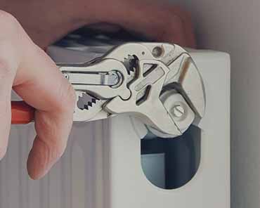
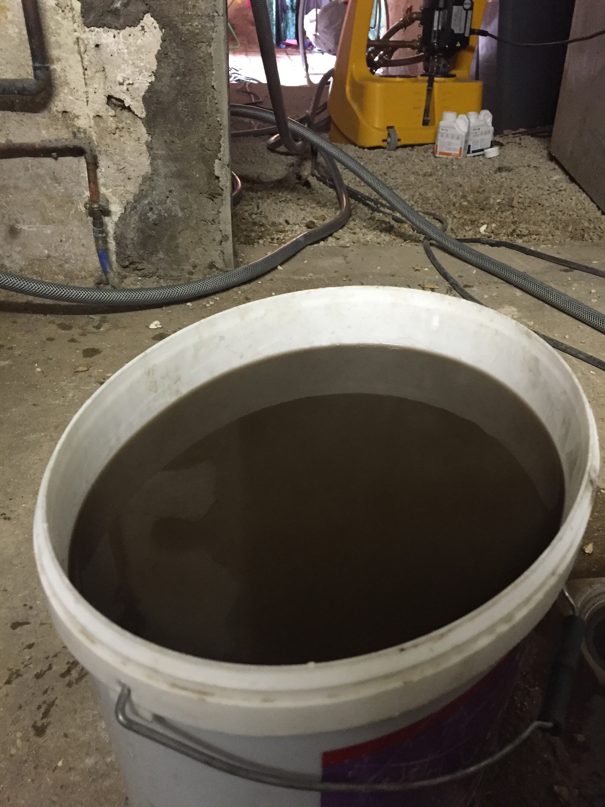

LES PRESTATION DE DESEMBOUAGE EN ESSONNE
Travaux Et Depannages De Desembouage En Essonne
Quelle est l’origine des boues ?
L’arrivée des boues dans un réseau de chauffage ou dans un système de climatisation est très fréquente. L’origine de ces apparitions peut provenir de différents éléments.
- L’eau en Ile-de-France est une des eaux les plus polluée de France. La qualité de l’eau utilisé pour remplir les systèmes de chauffage est donc un élément important à prendre en compte. Il faut donc vérifier le Ph, la dureté, le taux de fer, de chlorures ou encore de sulfates.
- Quand l’oxygène (présente dans l’eau que l’on injecte dans les systèmes de chauffages) entre en contact avec les parties métallique du système de chauffage, cela forme des oxydes ferriques et ferreux formant une substance boueuse qui se dépose dans vos installations.
- Les métaux que vous utilisez dans votre système de chauffage peuvent eux aussi jouer un rôle dans la formation de boues au sein de vos installations.
A quoi sert le désembouage ?
L’accumulation des boues et du tartre au sein de vos installations peut avoir d’importantes conséquences sur votre système de chauffage et peut également jouer un rôle dans la durée de votre installation. L’équipe de l’entreprise Santos Plomberie Chauffage est là pour vous accompagner pour un désembouage en Essonne, appelez-nous au 01 69 25 77 54
Les risques que l’accumulation peut produire sont les suivants :
- Les vannes peuvent se bloquer
- Les circulateurs peuvent être ralenti
- Des dégâts peuvent être causés au niveau des échangeurs de température
- On peut remarquer une importante perte de chauffage au niveau des radiateur ou du plancher, si sol chauffant
- Augmentation de sa facture de chauffage dû à la surconsommation d’énergie
- Pannes partielle ou de l’ensemble de votre installation
Il faut savoir qu’un système de chauffe bien entretenu permet un gain de 10 à 20% sur votre facture de chauffage. Un bon entretien permet également d’allonger la longévité de votre système. Alors n’hésitez plus… Contacter Désembouage Essonne qui interviendra dans les meilleurs délais.
Quand doit-on avoir recourt au désembouage ?
Pour les installations déjà en place certains signes peuvent nous prévenir qu’un désembouage est nécessaire. La présence de point froid au niveau des radiateurs, la mauvaise circulation, des bruits au niveau des radiateurs ou au niveau de la chaudière, l’apparition d’une eau noire ou orangée lors de la purge des radiateurs peuvent être des signes qu’un désembouage est nécessaire. Un signe prévient aussi d’un désembouage, si vous ne pouvez pas atteindre la température voulu malgré que votre chaudière tourne à plein régime. Pour toutes demandes de devis auprès de Désembouage Essonne, vous pouvez remplir notre formulaire et nous pourrons nous déplacer pour un diagnostic gratuit.
Désembouage Essonne vous conseille de procédé à un désembouage avant l’installation d’une nouvelle chaudière ou un nouveau système de chauffe. En effet, le désembouage permettra de vider l’ensemble du système de toutes substances qui pourraient être néfaste pour la nouvelle installation.
Les anciennes boues ainsi évacuées permettra à la nouvelle installation d’allongée sa durée.
Un désembouage est conseillée tous les 5 ans environ.
Quelles sont nos techniques pour un désembouage réussi ?
L’équipe de Santos Plomberie Chauffage a 3 manières bien différentes pour procéder au désembouage de vos réseaux de chauffage.
- La première est la plus courante et la moins néfaste. Il s’agit d’un désembouage avec un nettoyant chimique doux. L’équipe de Désembouage Essonne procède à un rinçage de votre installation et un réinjecte une eau pure dans vos circuits.
- La seconde méthode est un nettoyage chimique fort, nous utilisons cette méthode sur les réseaux entartrés, nous utilisons de l’acide sulfurique.
- La dernière méthode est un nettoyage hydropneumatique. L’entreprise Santos Plomberie Chauffage, injecte dans votre réseau une eau riche en bulles d’air qui va désembouer votre circuit en quelques heures seulement.
Les préventions que l’équipe Santos Plomberie Chauffage vous conseille ?
La cause première de la création de boue au sein de votre circuit est la présence d’oxygène au sein de vos
installations. Si votre réseau fuit, vous serez amené à remettre de l’eau fréquemment, ce qui ajoutera de
l’oxygéné aussi et qui favorisera alors un embouage plus rapide. L’équipe de Désembouage Essonne pourra vous
conseiller pour mettre en place différents moyens qui permettrons de prévenir du désembouage.
Contactez-nous au 01 69 25 77 54
Après intervention
Contactez-nous au 01 69 25 77 54